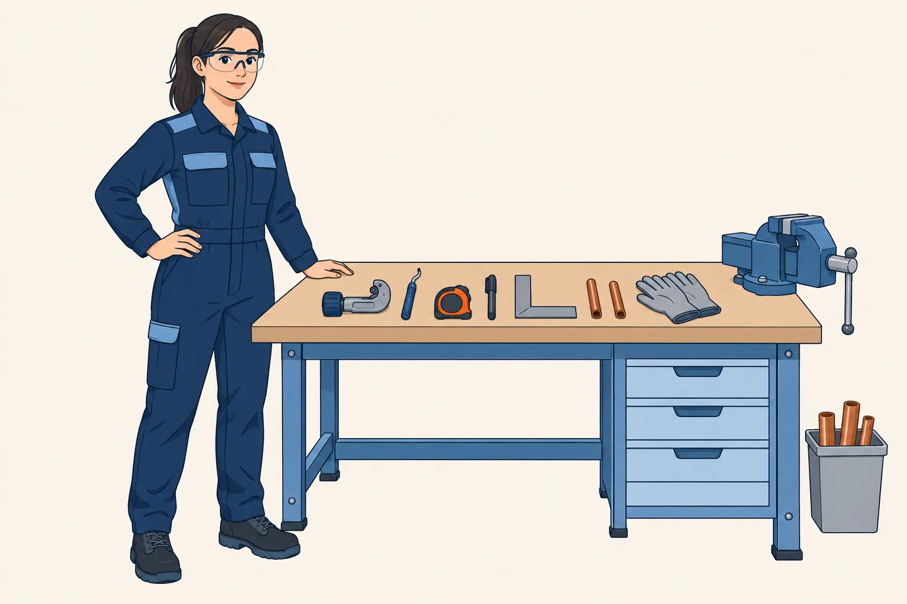
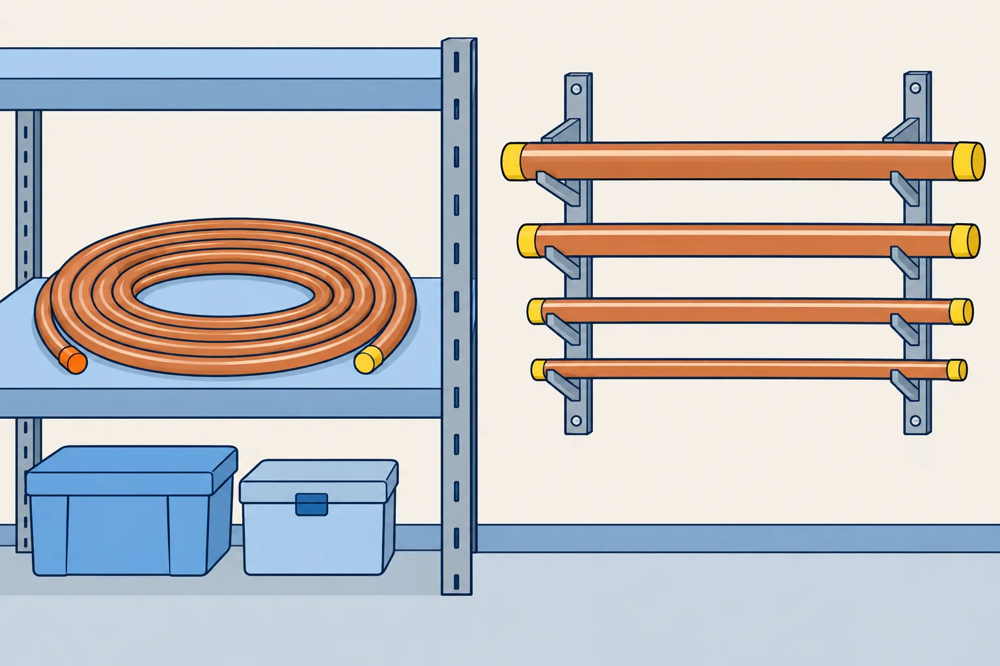
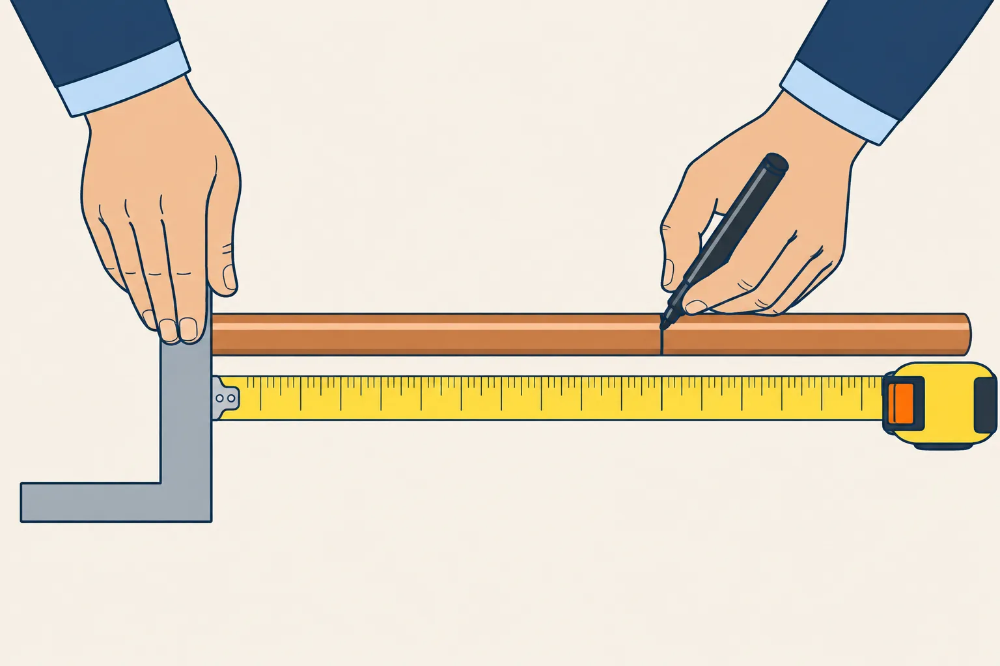
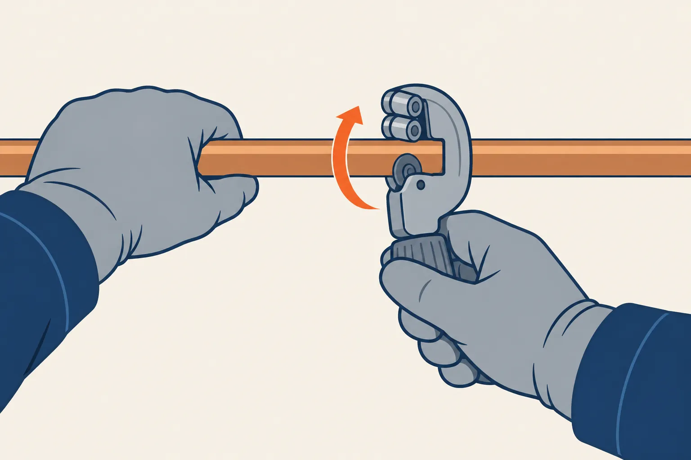
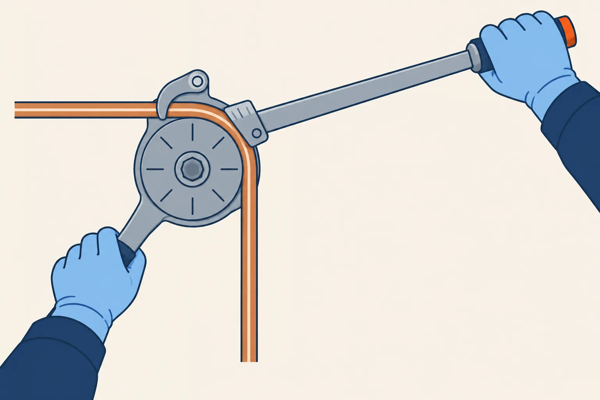
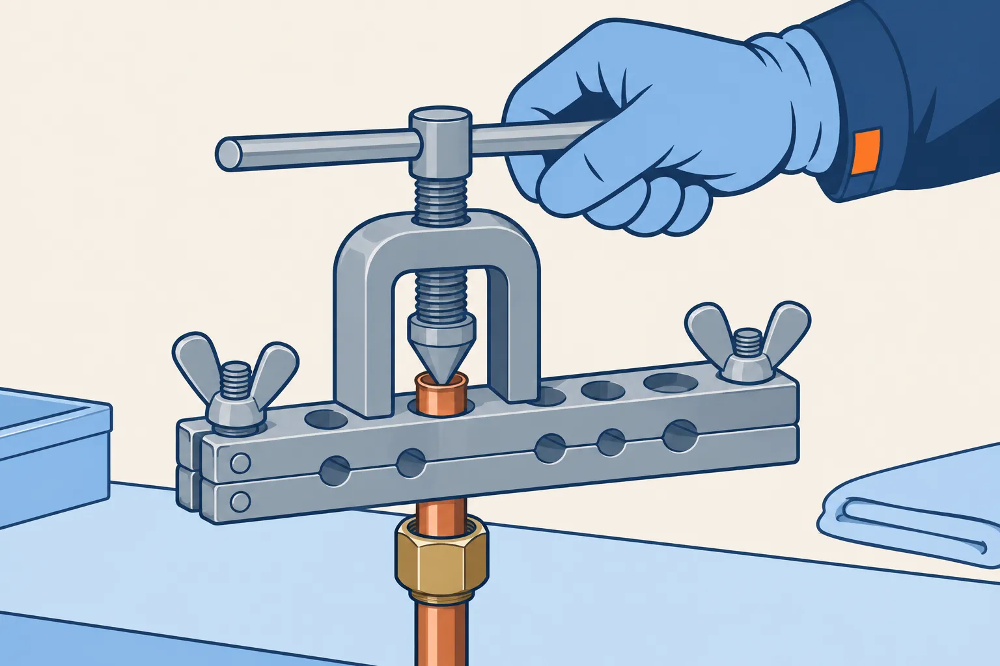
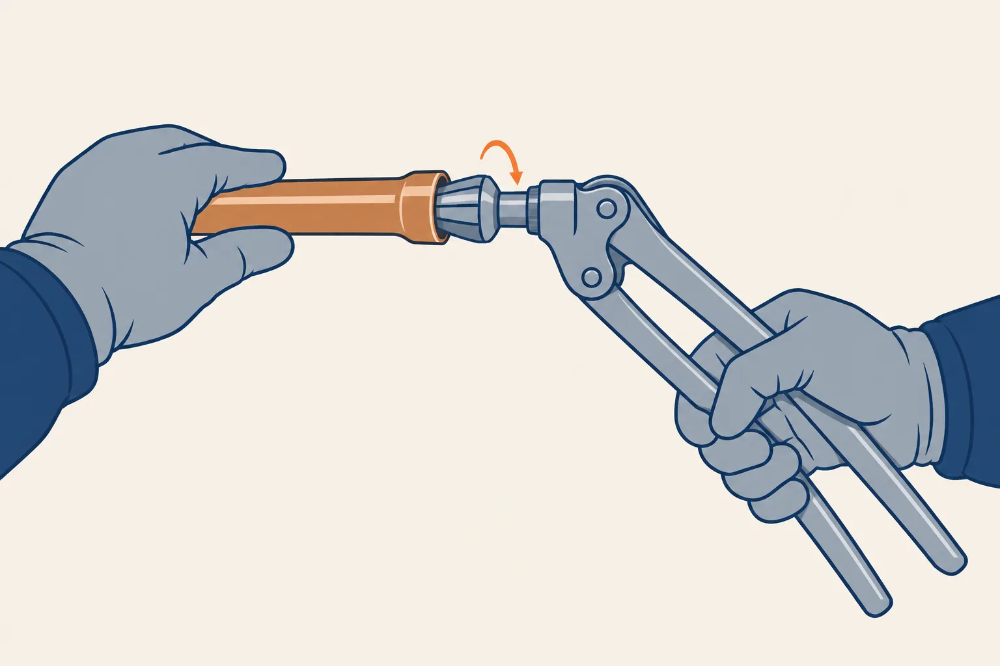

Chaque station vous guide pas à pas jusqu’à une pièce réussie : ce que vous devez obtenir, le matériel, le geste écran par écran, les pièges, votre propre contrôle. Quand tout est bon, vous appelez votre professeur : il confirme le geste. Chaque station réussie, avec son défi, vous donne un tampon : vos tampons restent sur cet appareil, rien n’est envoyé.
1 Les gestes de base
1.0
1.1
1.2
1.3
1.4
1.5
1.6
1.7
-

1.0 Mon poste de travailUn poste prêt, un élève protégé✦ Tampon gagné -

1.1 Reconnaître le tubeLe bon tube, nommé juste✦ Tampon gagné -

1.2 Mesurer et tracerUn trait fin, à la bonne cote, sur tout le tour✦ Tampon gagné -

1.3 Couper et ébavurerUn tube coupé d’équerre, sans bavure✦ Tampon gagné -
 1.4
Cintrer à la cintretteUn coude à 90°, 300 mm à l’axe✦ Tampon gagné
1.4
Cintrer à la cintretteUn coude à 90°, 300 mm à l’axe✦ Tampon gagné
-

1.5 Cintrer à la cintreuse (L, R, 0)Un coude à 90°, à la cote, du premier coup✦ Tampon gagné -

1.6 Le dudgeonUn dudgeon régulier, l’écrou en place✦ Tampon gagné -

1.7 L’emboîture à la pinceUn bout élargi où l’autre tube entre juste✦ Tampon gagné
2 Le chalumeau
2.1
2.2
3 Braser
3.1
3.2
4 Les pièces complexes
4.1
4.2
Les lignes qui suivront
- 5 Le réseau complet piquage, dessautage, pièce d’examen : une ligne frigorifique façonnée de bout en bout